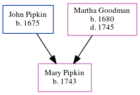

Mary Pipkin 1743 -
[ Home ] | [ Calendar ] | [ Surnames Index ] | [ Family History ]The child of John Pipkin and Martha Goodman, Mary Pipkin, the five times great-aunt of Michele Copp (née Phillips), was born in Chowan, Pitt, North Carolina, USA in 17431.
Parents
- John was born in 1675
- Martha was born in 1680
Citations
- OneWorldTree Online publication - Provo, UT, USA: MyFamily.com, Inc.
Family Tree
Generated by ged2site. Last updated on Jun 16, 2024